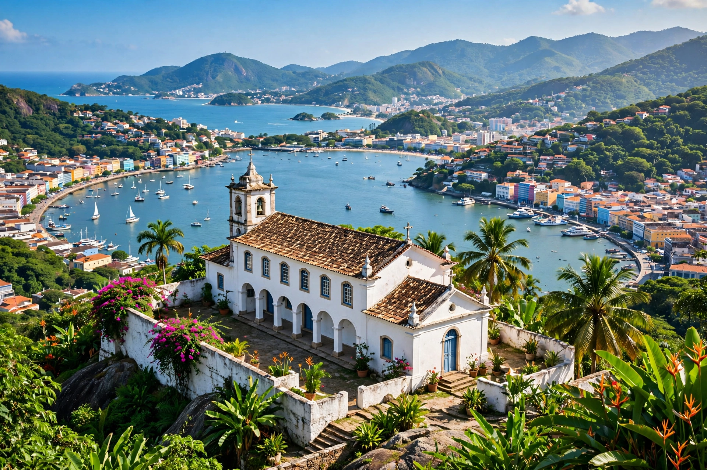

Vila Velha
| Vila Velha | |
 | |
| Country | Brazil |
|---|---|
| State | Espírito Santo |
| Founded | 23 May 1535 |
| Population | c. 467,000 (2022 census) |
Vila Velha ("Old Town") is a coastal city in the Brazilian state of Espírito Santo, lying across the bay from the state capital Vitória, to which it is connected by the Third Bridge (Terceira Ponte). It is the state's most populous municipality and its oldest European settlement.
History
Vila Velha was founded on 23 May 1535 by the Portuguese donatário Vasco Fernandes Coutinho and served as the first capital of the captaincy of Espírito Santo until the seat of government moved to Vitória in 1551. The hilltop Convento da Penha (Penha Convent), founded in 1558 by the Franciscan Pedro Palácios, is one of Brazil's oldest and most beloved pilgrimage shrines, hosting the Festa da Penha each year after Easter.
Geography and economy
The city has about 32 km of beaches, including Praia da Costa, Itapoã, and Itaparica, and is a centre for the garment industry and for chocolate production — the Garoto chocolate factory, one of Brazil's largest, is located here. The port area of Capuaba handles cargo for the Vitória port complex.
See also
Espírito Santo · List of state capitals in Brazil
Recreated from memory as a standalone page.